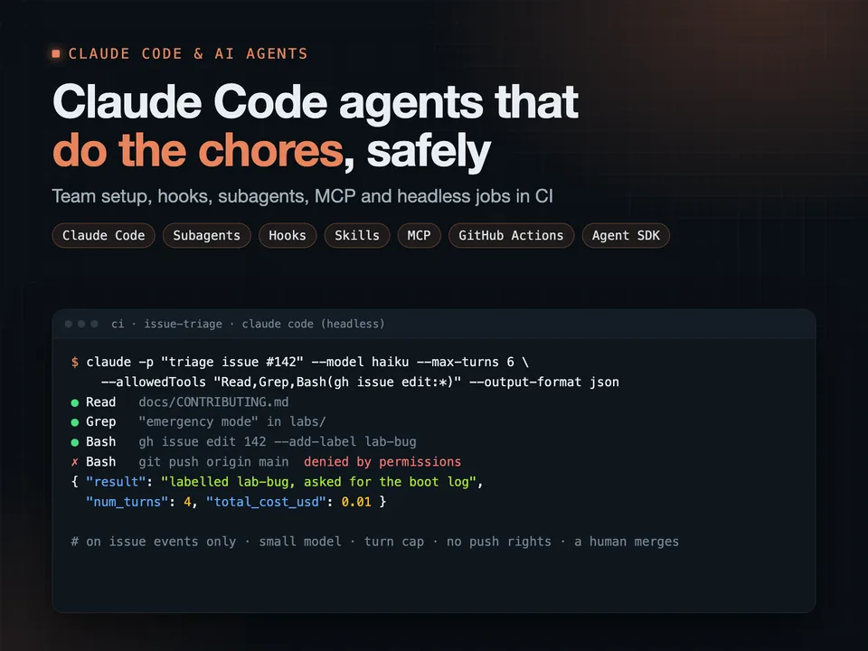
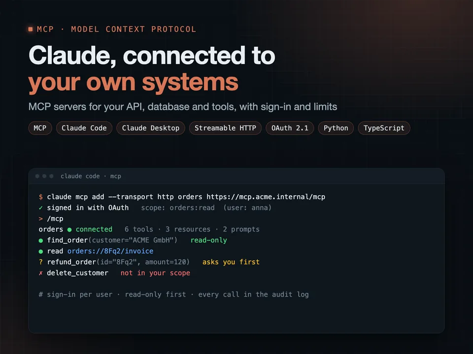
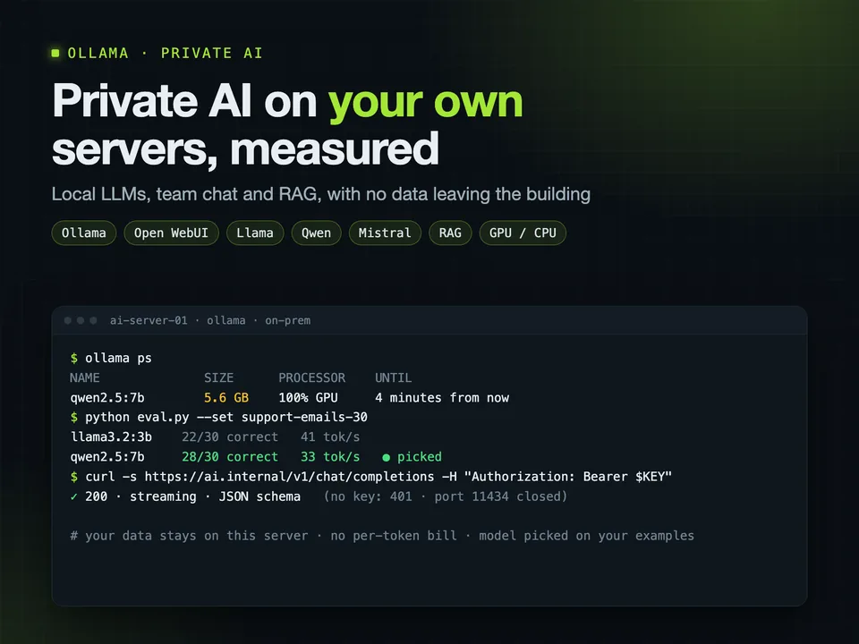
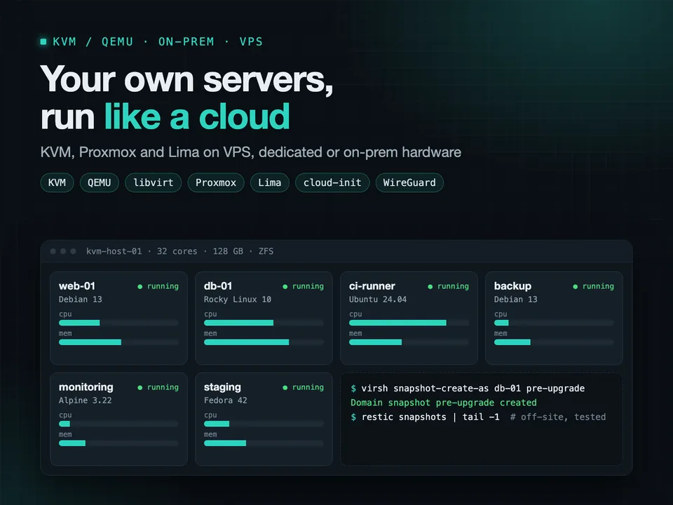
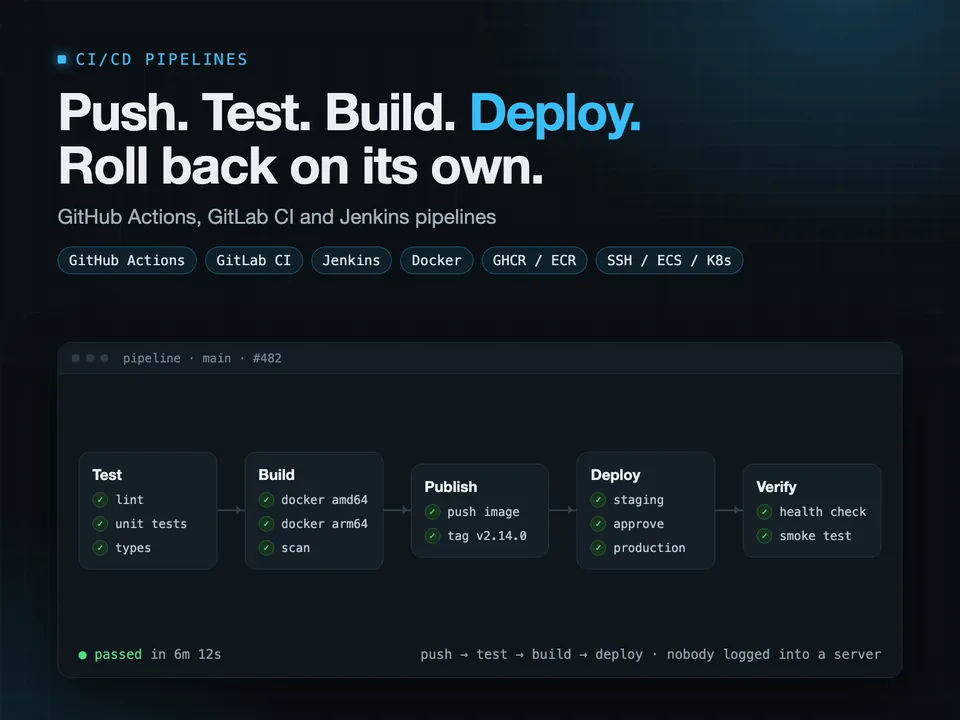
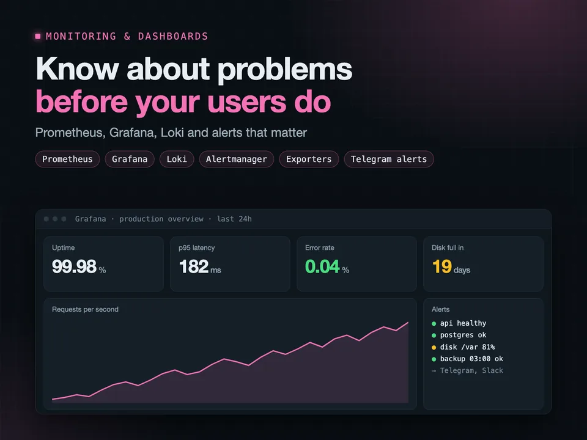
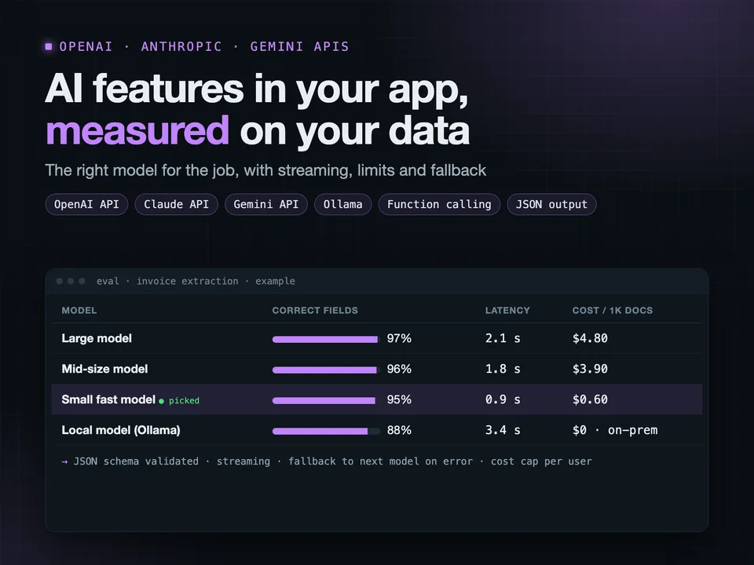
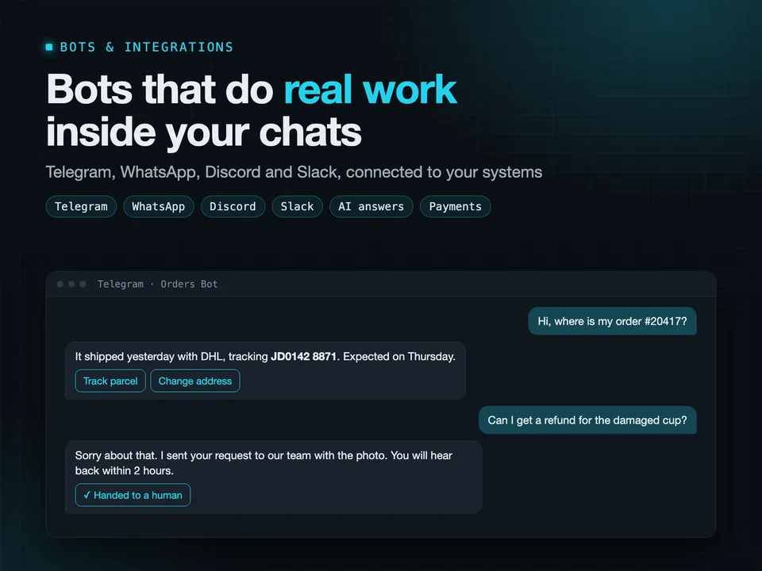
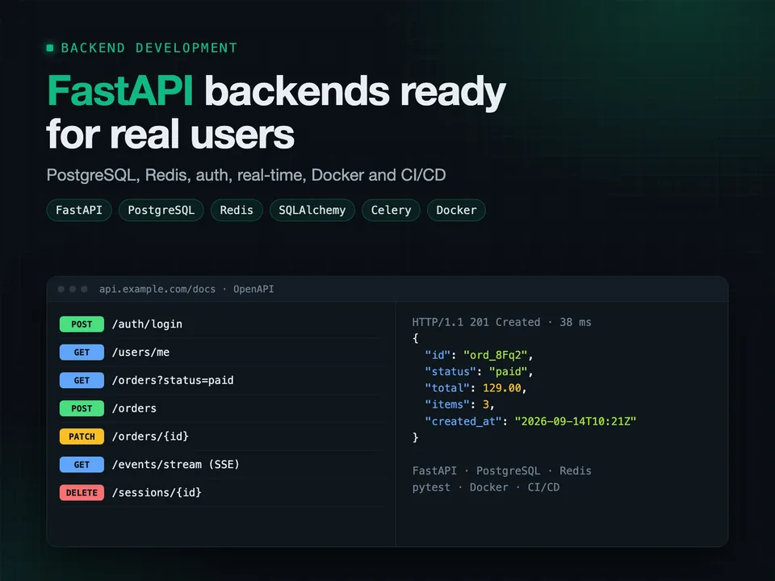

Claude Code & AI agents
Claude Code setup and AI agents for your team: CI, hooks, plugins
You get Claude Code working for your whole team, not only on one laptop: shared rules in git, safe permissions, and agents that take routine engineering work off people.
More
What I set up:
- CLAUDE.md, settings and permission rules, so Claude knows the project and cannot touch what it should not
- hooks that format, lint and block risky commands on their own
- subagents and skills for the tasks your team repeats: reviews, migrations, new endpoints, docs
- headless Claude Code jobs in CI: issue triage, pull request review, release notes, fixes drafted as pull requests a human merges
- plugins that share those skills, agents and hooks across all your repositories
The cost stays predictable. Agents run on events, not on a timer. Every job has a turn cap, a tool allowlist and the cheapest model that does it well. Tests run against a fake API, so they cost nothing.
In my project Norboten, headless Claude Code runs in GitHub Actions: issue triage, release notes, and new labs drafted as draft pull requests. I measured every job on real runs: labelling an issue costs under a cent. Its Claude Code plugin turns an idea into a new lab.
claude codeclaude aiai agentsclaude code pluginsai devops automation
See the packages on Upwork →

MCP servers for Claude
MCP server for Claude: connect your API, database and tools safely
You get an MCP server that lets Claude work with your own systems: your API, database, internal tools or product data, with the access you decide.
More
What I build:
- MCP tools for the actions Claude may take, resources for the data it may read, prompts for the tasks your team repeats
- a local server for Claude Code and Claude Desktop, or a remote one over Streamable HTTP for your whole team or your customers
- OAuth sign-in and per-user scopes, so Claude only sees what that person may see
- read-only first; anything that changes data asks for confirmation and lands in an audit log
- tests with MCP Inspector and in CI, and a Docker deploy
Safety is part of the build, not an extra: tool results are treated as untrusted text, secrets never reach the model, and every tool has limits.
In my project Norboten, an MCP server gives Claude the platform itself: labs, journals and a learner's progress, with sign-in. I also wrote a track of six hands-on labs about MCP going wrong: a file server that shows everything, a fetched page that gives the agent orders, a token accepted for the wrong audience, a server that breaks its own stdout, a stream a proxy cuts off.
mcp servermodel context protocolclaude mcpai integrationclaude code
See the packages on Upwork →

Ollama & private AI (self-hosted LLMs)
Self-hosted LLMs with Ollama: private AI server, RAG and team chat
You get AI that runs on your own servers: your documents, customer data and code never go to OpenAI, Google or anyone else, and there is no bill per token.
More
I set up Ollama on your Linux server, a GPU box or a VPS, and make it production-ready:
- models picked for your hardware and your task, by measuring speed, memory and answer quality on your own examples
- TLS, authentication and rate limits, because an open Ollama port is a real security hole
- a chat for your team (Open WebUI) that answers from your documents
- an OpenAI-compatible API, so your apps and scripts can switch to the local model with a config change
- structured JSON output, streaming, monitoring and backups
In my project Norboten, Ollama runs in the same Docker Compose stack as the API and answers the site's chat assistant. I measured instead of guessing: the 0.5B model answered 8 of 10 test questions and the 1.5B model 9, so the small one stays and the server needs far less memory. Four hands-on labs are about Ollama going wrong: behind Nginx, open to the network, a context too short for its rules, a model too big for its memory.
Plus 15+ years of engineering and Linux administration underneath.
ollamalocal llmself-hosted aiprivate llmrag
See the packages on Upwork →

KVM/QEMU + Lima, on-prem, VPS and dedicated servers
KVM/QEMU virtualization on VPS, dedicated or on-prem Linux servers
You get your own servers working like a small private cloud: a VPS, a dedicated machine or an on-prem box running your services in VMs or containers, secured, backed up and monitored.
More
For steady workloads, a dedicated server often costs a fraction of the same capacity on AWS or GCP. The trade-off is that someone has to set it up properly. That is what I do.
What I set up:
- KVM with libvirt, or Proxmox if you want a web UI
- VM templates from official cloud images with cloud-init, so a new VM takes a minute
- bridged or private networking, WireGuard between sites
- storage with LVM or ZFS, snapshots, and backups that are restore-tested
- Docker Compose for services, Caddy or Nginx with TLS in front
- Prometheus and Grafana to see what the host is doing
I built my own platform, Norboten, on QEMU/KVM and Lima: it starts a real Linux VM from a prepared image, snapshots its disk and resets it in about 10 seconds. I tuned the images so Alpine boots in 7 seconds instead of 22, and built serial console access for VMs that are stuck at boot. Its server side is designed for one VPS or bare-metal machine.
kvmqemuvirtualizationdedicated serverself hosting
See the packages on Upwork →

CI/CD with GitHub Actions, GitLab CI and Jenkins
CI/CD pipeline on GitHub Actions, GitLab CI or Jenkins, auto deploy
You get a pipeline where every push is tested and every merge is deployed, without anyone copying files to a server or running commands by hand.
More
I build pipelines on GitHub Actions, GitLab CI and Jenkins for web backends, Python and Node.js services, Docker apps and mobile apps.
A typical pipeline:
- lint and tests on every pull request, with caching so it stays fast
- Docker images built for amd64 and arm64 and pushed to GHCR, ECR or Docker Hub
- deploy to a VPS over SSH, to AWS (ECS, EC2, Lambda) or to Kubernetes
- the deploy waits for a health check, and rolls back on its own if the new version is not healthy
- secrets in the CI secret store, a manual approval before production, a message in Slack when it is done
In my own project, Norboten, GitHub Actions runs 1,000+ tests, builds multi-arch images and deploys with automatic rollback. Another pipeline boots a clean Linux VM or container for every lab and proves it can be solved before the change can merge.
I also have 7+ years of mobile development, so App Store and Google Play release pipelines are familiar ground.
ci/cdgithub actionsgitlab cijenkinsdeployment pipeline
See the packages on Upwork →

Monitoring and dashboards with Prometheus and Grafana
Prometheus and Grafana monitoring, dashboards and alerts
You get dashboards that show what your servers and apps are doing right now, and alerts that wake the right person only when something really needs attention.
More
I set up Prometheus, Grafana, Alertmanager and Loki on your servers or in Kubernetes, and connect everything you run:
- Linux hosts: CPU, memory, disk, network, systemd services
- Docker containers, Nginx, PostgreSQL, MySQL, Redis
- your own application: request rates, errors, latency, queue sizes
- business numbers straight from your database: signups, orders, revenue per day
Alerts go to Telegram, Slack or email, with rules tuned so you do not start ignoring them: disk filling up in the next 24 hours, error rate above normal, a backup that did not run.
Dashboards and alert rules are files in git, provisioned automatically, so a rebuilt server gets the exact same monitoring back.
My own project, Norboten, exports metrics from its FastAPI backend, PostgreSQL and the host to Prometheus, with Grafana and its data sources provisioned from the repository. It also has an analytics section built with pandas and scikit-learn from the database.
grafanaprometheusmonitoringgrafana dashboardalerting
See the packages on Upwork →

OpenAI / Anthropic / Gemini API integration
OpenAI, Claude or Gemini API integration into your app or backend
You get AI features built into your product properly: fast, reliable, with a predictable cost, and safe to put in front of real users.
More
I integrate the OpenAI, Anthropic Claude and Google Gemini APIs, or open models on Ollama, into Python and Node.js backends, web apps and Flutter mobile apps.
What production-ready means here:
- responses stream to the user, so nothing hangs for 20 seconds
- structured outputs checked against a schema, so your code never parses broken JSON
- function calling so the model can use your data and actions, but only the ones you allow
- retries, timeouts, rate and cost limits per user
- fallback to another model or provider when one is down
- a test set of real examples, so a prompt change or model switch is measured, not guessed
In my platform Norboten, one provider layer picks Claude (Claude Code or the API), OpenAI, Gemini or local Ollama by model name. The AI tutor never receives the lab's solution, and every answer is checked before it is shown. New quiz questions are answered blind by two other models, checked by a critic and a sandbox, then read by a person.
Plus 10+ years of mobile, frontend and backend work, so the AI fits into your app.
openai apichatgpt integrationclaude apigemini apillm integration
See the packages on Upwork →

Telegram, Discord, WhatsApp, Slack bots and integrations
Telegram, WhatsApp, Discord or Slack bot with AI and integrations
You get a bot that does useful work where your customers and team already are: Telegram, WhatsApp, Discord, Slack or Viber.
More
Common bots I build:
- customer support bots that answer from your own FAQ and documents, and hand off to a person when they are unsure
- order, booking and lead bots connected to your CRM, Google Sheets or database
- internal bots: alerts from servers and apps, daily reports, approvals ("approve this refund?" with two buttons)
- community bots for Discord: roles, moderation, announcements
- bots with payments through Stripe or Telegram Payments
Built in Python (aiogram, discord.py, Slack Bolt, WhatsApp Cloud API), with FastAPI webhooks and a database behind them. AI answers use OpenAI, Anthropic Claude or Gemini, with limits so a busy day does not become a big bill.
The bot runs on your server or a cheap VPS in Docker, restarts on its own, and logs every error. You own the code and the bot account.
In my project Norboten, a chat assistant on every page answers from the project's docs, streams its replies, and checks each answer before it goes out.
Plus: 10+ years of mobile and backend development, so a bot can grow into a full app if you need it.
telegram botwhatsapp botdiscord botslack botchatbot
See the packages on Upwork →

Backend on FastAPI
FastAPI backend with PostgreSQL, Redis, auth, Docker and API docs
You get a Python backend built on FastAPI that is fast, documented and ready for real users: the API for your web app, mobile app, SaaS or internal tool.
More
What is included:
- REST API with automatic OpenAPI docs your frontend and mobile developers can use from day one
- PostgreSQL with SQLAlchemy and Alembic migrations, Redis for caching, sessions and rate limits
- authentication: email and password with argon2, JWT or sessions, OAuth login, roles
- background jobs with Celery or arq, scheduled tasks, file uploads to S3
- real-time updates with WebSockets or server-sent events
- tests with pytest, Docker Compose for local dev, CI/CD deploy to a VPS or AWS
My own platform, Norboten, runs on this stack: FastAPI, PostgreSQL and Redis, with accounts, a device-code login for its terminal app, Glicko-2 skill ratings, live terminal sessions streamed to the browser through Redis pub/sub, rate limits, Prometheus metrics, a chat assistant on a local Ollama model and an MCP server for Claude. 1,000+ tests across the project.
I also have 7+ years of Flutter apps for iOS and Android, and React frontends before that, so the API is designed around what the client apps actually need.
fastapipython backendrest apipostgresqlapi development
See the packages on Upwork →